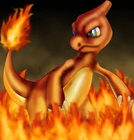
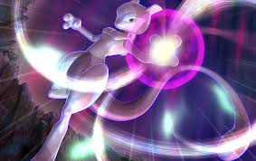
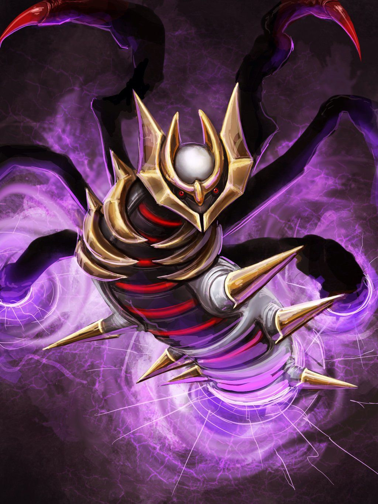

Pichu
 Pichu is a rodent like Pokemon it can store electricity in its cheek pouches but only small amounts it can discharge the energy but will also shock itself.
Pichu is a rodent like Pokemon it can store electricity in its cheek pouches but only small amounts it can discharge the energy but will also shock itself.
Pickachu
 Pikachu is a chubby rodent like Pokemon that can store electricity in itself. Unlike its pre evolution form pichu it doesn't hurt itself while discharging energy.
Pikachu is a chubby rodent like Pokemon that can store electricity in itself. Unlike its pre evolution form pichu it doesn't hurt itself while discharging energy.
Raichu
 Raichu is a rodent like pokemon and the evolution of pikachu and pichu. It evolves from a pikachu after you give it a thunderstone.
Raichu is a rodent like pokemon and the evolution of pikachu and pichu. It evolves from a pikachu after you give it a thunderstone.
Charmander
 Charmander is a fire-type Pokemon his body is orange colored and a pale belly.
Charmander is a fire-type Pokemon his body is orange colored and a pale belly.
Charmeleon
 He has dark red scales, It has narrow, blue eyes and a long snout with a slightly hooked tip
Charizard
 Charizard is a flying-fire type pokemon that is orange with wings and has horns.
Charizard is a flying-fire type pokemon that is orange with wings and has horns.
Mewtwo
 Mewtwo is a result of years of gene splicing and DNA engineering experiments from the pokemon mew.
Giratina
 Is a dragon, ghost type pokemon that is large gray draconic Pokemon with golden rings coming from his back and has a crowned shaped ring on his head.
Darkrai
 Is a shadow like pokemon that is able to cause horrific nightmares. It only causes nightmares in self defence.
Is a shadow like pokemon that is able to cause horrific nightmares. It only causes nightmares in self defence.
Arceus
 This is a legendary pokemon which has a 1.6 percent catch rate it can change type whether its holding a plate or type specific z crystal.
This is a legendary pokemon which has a 1.6 percent catch rate it can change type whether its holding a plate or type specific z crystal.